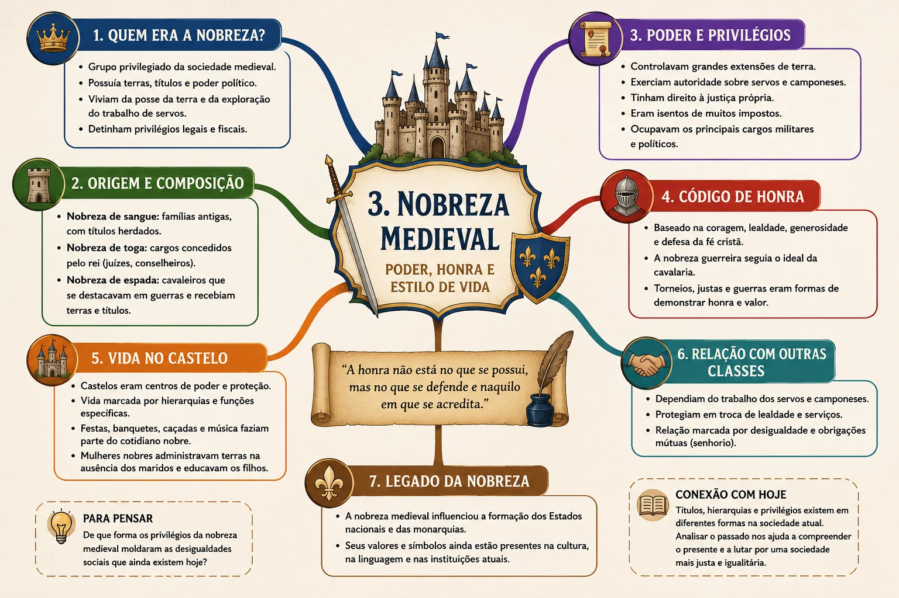

Tópico 3 de 9
Nobreza medieval
Poder, honra e estilo de vida: um grupo social definido menos por lei escrita do que por um modo de viver.
A nobreza medieval não era definida por lei escrita, mas por um modo de viver específico. Foi entre os séculos XI e XII que, mesmo sem definição jurídica precisa, a nobreza passou a designar um grupo social caracterizado pela fortuna, pelo poder exercido sobre indivíduos dependentes e por um estilo de vida fundamentado na guerra, na caça e nos torneios.
A vocação guerreira
O nobre combatia a cavalo e com equipamento próprio, enquanto os soldados de infantaria combatiam a pé. Com o tempo, "cavaleiro" tornou-se sinônimo de nobre e "infante", de condição inferior. A guerra não era apenas um dever: era origem de honra e razão de viver.
O poder e o prestígio dos nobres variavam conforme o título — rei, conde, duque, marquês ou cavaleiro — e que o próprio rei era um nobre, podendo tornar-se vassalo de outro rei. O trabalho manual era visto pelos nobres como algo indigno, e as principais ocupações da nobreza eram a guerra, as caçadas e os torneios.
Origem versus riqueza
A nobreza tornou-se hereditária. A origem — ter nascido de pais nobres — era o critério principal, e não a riqueza, a competência militar ou o cargo ocupado. Um cavaleiro empobrecido continuava nobre; um comerciante enriquecido continuava plebeu. Esse detalhe distingue com clareza a estratificação estamental da estratificação de classe.
Cavaleiro, nobre, senhor: três palavras distintas
Cavaleiro designa uma função militar: aquele que combate a cavalo, com equipamento próprio. Nobre designa uma condição social e hereditária, com privilégios reconhecidos pelo costume e pela lei. Senhor designa uma posição de poder sobre uma terra e sobre as pessoas que nela vivem. Um mesmo indivíduo podia ocupar os três — e é justamente essa acumulação que caracteriza o poder feudal.
Coração de Cavaleiro
Filme relacionado ao tema — abre em uma nova página.
📝 Atividades de aprendizagem
Reforce o que você estudou com questões sobre a nobreza medieval e o conceito de estamento social.
Textos-base e questões dissertativas sobre origem, hereditariedade e distintivos nobiliárquicos.
Revisando com mindmap

Clique na imagem para ampliar. Use os controles de zoom ou arraste a imagem quando ampliada.